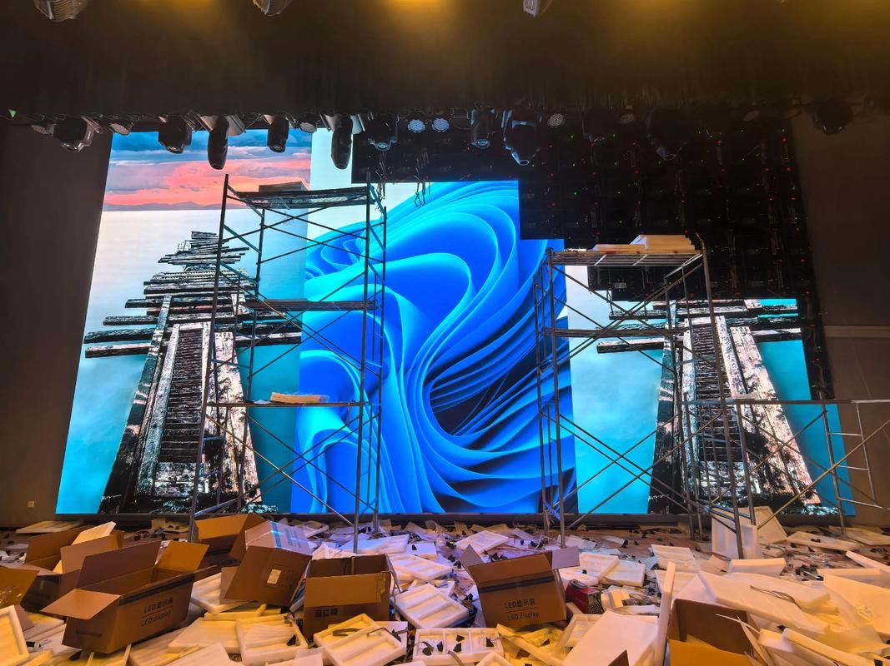

A property sales centre has one job: to make a buyer believe in a building that does not exist yet, or in a home they cannot yet walk through. LED displays are central to that job because they can show a masterplan animation at architectural scale, a walkthrough of an unfinished apartment, and a live price and availability board, all in the same room. A printed brochure cannot compete with a moving, illuminated plan on a wall.
The sales process is also a performance. Agents walk buyers through a sequence of spaces, and each space needs to deliver a specific message at a specific moment. Screens are the most controllable tool in that sequence: they can be switched instantly, updated daily as units sell, and matched to the mood of the room.
Unlike advertising screens, property sales screens are viewed by a small, attentive audience that stays for a long time. That changes the specification completely. Viewing distances are short and seated, image quality matters more than brightness, and the content is expected to look sharp and professional because it is selling a high-value purchase.
This guide covers where screens belong in a sales centre, which technologies and pixel pitches suit each zone, how to plan content, and what to consider when installing and servicing screens in a working sales office.
The organizing principle throughout is that the screen should support the sales conversation. A screen that plays a generic corporate loop in the corner is a missed opportunity; a screen that answers the buyer's next question is an asset.
The reception or entrance zone sets expectations. A moderately sized wall screen or a poster terminal here can run brand films, the development's location animation, and a welcome message. Because this zone is often bright and busy, brightness needs headroom, but the content is short and atmospheric rather than detailed.
The masterplan zone is the heart of most sales centres and the reason large screens are specified. A big wall, often two to four meters wide, displays an interactive or animated masterplan showing the site, the phase being sold, and the surrounding amenities. Viewing distance here is longer, three to six meters for a seated or standing group, so pixel pitch can be coarser than a close-view screen while still looking crisp.
The model or sample unit zone is where buyers inspect detail. Screens here often sit beside a physical scale model and show apartment walkthroughs, finish options, and floor plans. Viewing distance is short, one to three meters, so a fine pitch is needed to keep interior detail and text legible.
The negotiation or closing zone is quieter and smaller. A compact screen near the signing table can show unit availability, a price and payment calculator, or a personalized summary while the agent and buyer talk. Reliability here is critical because a screen that freezes during a closing conversation undermines confidence.
Finally, some developments add an exterior or facade screen for evening impact and an LED poster near the entrance for opening hours and directions. These exterior-facing units must be specified for outdoor brightness and weather protection if they are truly outside.
| Zone | Screen Size | Suggested Pitch | Key Requirement |
|---|---|---|---|
| Entrance and reception | 2-3 sqm wall or poster | P1.8 - P2.5 | Brightness for a bright lobby |
| Masterplan feature wall | 6-20 sqm wall | P2.5 - P3.9 | Wide canvas, seated viewing |
| Model and unit detail | 2-4 sqm wall | P0.9 - P1.5 | Fine pitch for close detail |
| Negotiation and closing | 1-2 sqm or poster | P1.5 - P2.5 | Exceptional reliability |
| Exterior facade (optional) | Varies | P4 - P10 | IP65 and high brightness |
Property sales content is different from retail advertising because the buyer is making a slow, considered decision rather than a quick impulse purchase. The screen's role is to build understanding and confidence over time, not to shout for attention. That means clarity, accuracy, and calm pacing matter more than dramatic cuts.
Masterplan animation is the flagship asset. A well-made masterplan shows the site from above, moves through the phases, highlights amenities and transport links, and lands on the specific phase being sold. It should be built to the screen's exact aspect ratio and resolution so the buildings and text stay crisp, and it should be updated as phases progress.
Apartment walkthroughs are the second pillar. Buyers want to understand the layout, the light, and the finishes. A walkthrough that matches the actual floor plan builds trust; one that shows finishes the buyer will never receive destroys it. Accuracy is not only an ethical issue, it is a legal one in many markets, so content should be reviewed against the final specification.
Live availability and pricing boards turn a screen into a working sales tool. Connected to the sales system, a screen can show which units are sold, held, or available, and update the moment a status changes. This is arguably the most valuable screen in the centre because it directly supports the closing conversation and avoids outdated printed lists.
Scheduling and control tie the content together. Agents should be able to switch the centre from a daytime showcase mode to an evening event mode, cue a specific walkthrough for a buyer sitting in front of the screen, and update availability without calling a technician. Simple, reliable control is worth more than another lighting trick.
| Sales Stage | Screen Content | Duration | Update Frequency |
|---|---|---|---|
| Attract and welcome | Brand film, location animation | 30-60 seconds | Occasional |
| Introduce the development | Masterplan animation | 1-3 minutes | Per phase |
| Explore the home | Apartment walkthrough | 1-2 minutes | Per unit type |
| Compare and decide | Floor plans, finishes, specs | Static or slow loop | As specifications change |
| Close the sale | Availability and price board | Live data | Daily or real-time |
A sales centre is a live environment, so installation has to fit around opening hours and finish cleanly. Walls are often finished and branded, which means the screen and its mounting must be planned early, before the interior is closed up. Cabling should be routed during fit-out, because chasing a finished feature wall later is expensive and messy.
Wall construction matters for mounting. A feature wall built from studwork and plasterboard will not carry a large screen on its own, so a structural backing or a secondary frame must be designed into the wall. This is a detail that is trivial at design stage and painful after handover, so it should be confirmed with the fit-out contractor early.
Thermal and acoustic conditions in a sales centre are usually comfortable, which is good for the screen. Still, a sealed feature wall can trap heat behind the display, so rear ventilation is needed unless the screen is designed for fully enclosed installation. Specifying the mounting condition and letting the supplier advise on airflow avoids the most common cause of premature failure.
Service access should allow a module to be replaced without dismantling the wall or disrupting a viewing. On a busy weekend a dark module must be fixed within minutes, so front-serviceable cabinets are usually preferred for feature walls, with rear access where a plant room or corridor allows it.
Finally, plan the content handover. The developer's marketing team, not the AV installer, owns the content long term, so the control system should be simple enough for them to update schedules and availability themselves. Training and a clear operating guide turn the screens from a specialist system into a daily sales tool.
Asia Vision Technology supplies indoor LED for property sales centres and showrooms, from fine-pitch COB panels at P0.9 for close-view detail to seamless large canvases for masterplan walls, with indoor brightness from 800 to 2500 nits and refresh rates of 3840 Hz and above for clean on-camera performance.
We help developers plan screen zones and switching during fit-out, size the canvas to the masterplan content, and choose front or rear service access for a live sales floor. Orders ship in 15 to 20 working days with a 3-year standard warranty and CE, FCC, and RoHS certification.

For this requirement our range covers it directly: the X Series (front/rear service, common parts across platforms) and the series overview for spare-part lists.